×
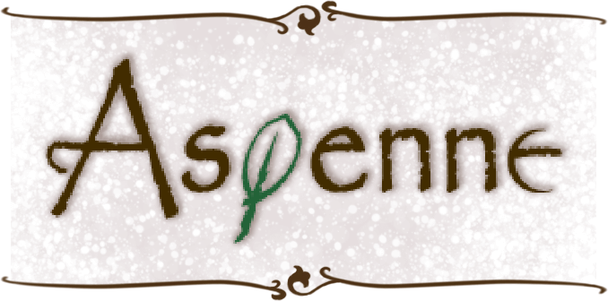
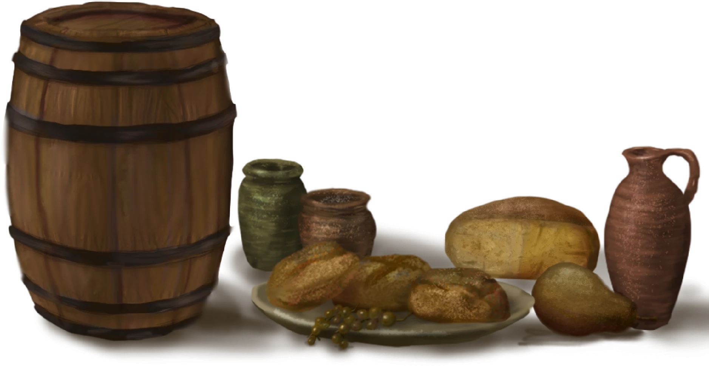
中世紀是一日兩餐，不是一日三餐?
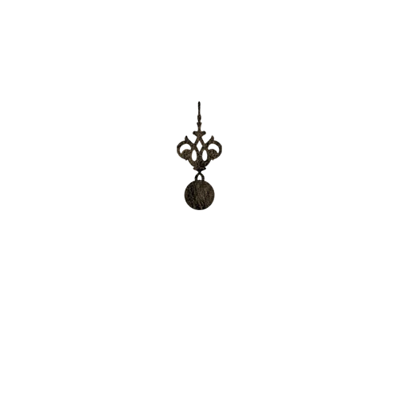
正餐為早上10點，晚餐為5點
殼物是歐洲人主要的飲食
多數會製成麵包，是中世紀飲食重要的部分，有時會也會煮成稀粥和麵條
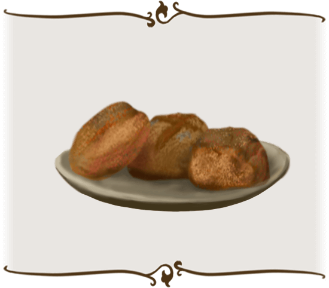
菁英階層
最好的小麥製作的精白麵粉
價格最高，營養亦高
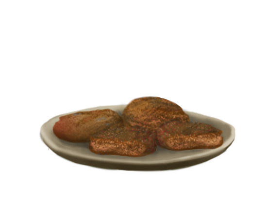
貧窮家庭
黑麥、大麥甚至燕麥
粗糙麵包托盤的形狀
中世紀常見的醫療方式—藥草
潛
藏
在
大
自
然
中
的
治
癒
能
力
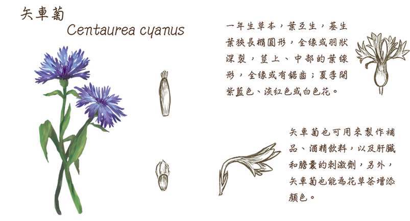
一眼就看出差別的服飾?
在中世紀除了用勳章來表明身分外，最直觀的分辨就是用衣料與顏色鮮艷程度區分
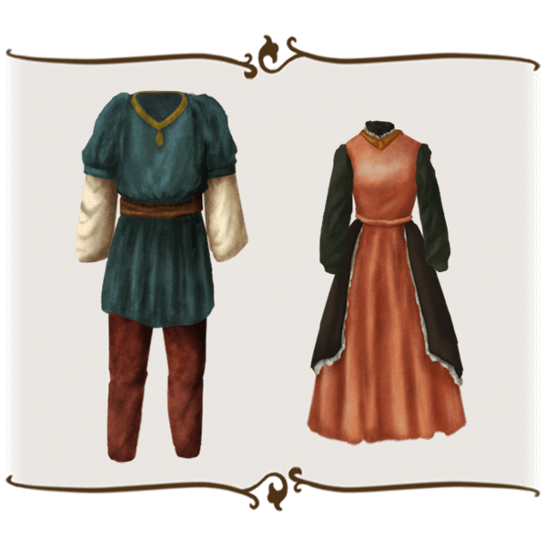
貴族
明亮衣服、精緻材料
追求時尚風格
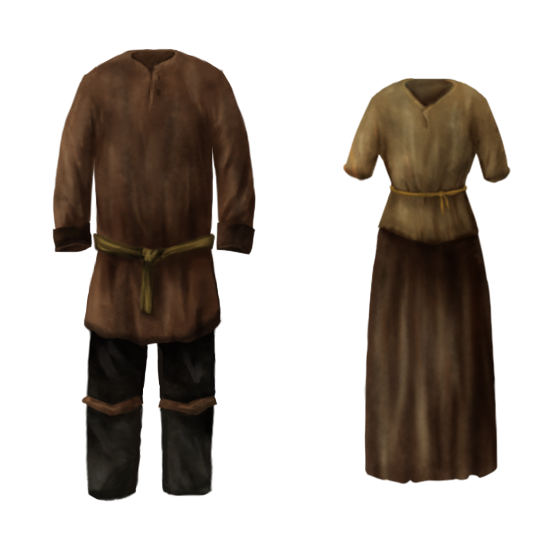
平民百姓
單調、樸素
布料較為粗糙
城鎮 vs 鄉村房屋差別
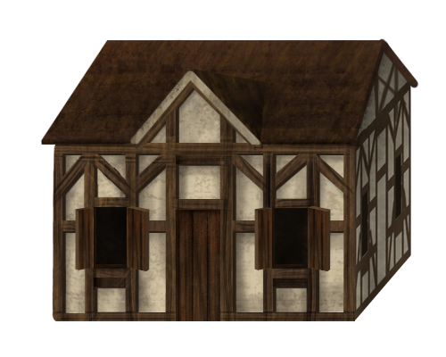
城鎮—半木結構建築
結合石頭與木材，能保持室內的溫度和濕度
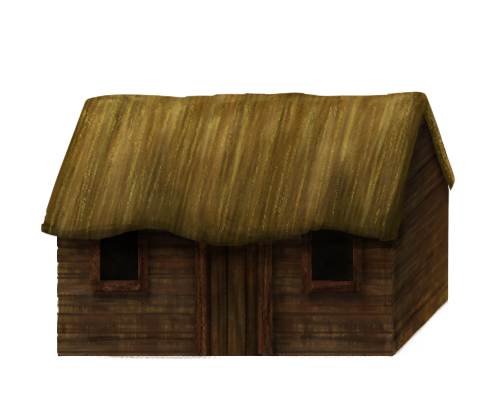
鄉村—木製造房
當時多就地取材，屋頂再加上茅草當屋頂
交通的轉變
中世紀城鎮常見的交通方式，一個是人與馬，一個是用來載客或貨物的馬車...
「只喝酒?不喝水?」
中世紀乾淨水源取得不易
人們也沒有喝開水的習慣
而易保存的酒精飲料成為中世紀常見的飲品
啤酒更受平民歡迎，大部分人把啤酒作為飲食的一部分
貴族飲用第一次擠壓出來的上品酒
平民則是二三次擠壓的葡萄酒
而最窮的人只能喝得起葡萄製成的黑醋
 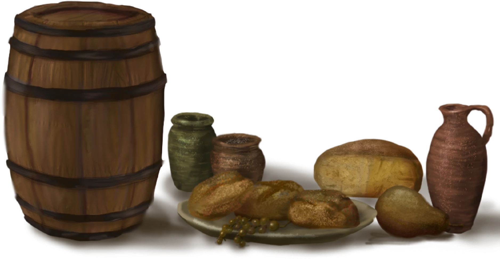
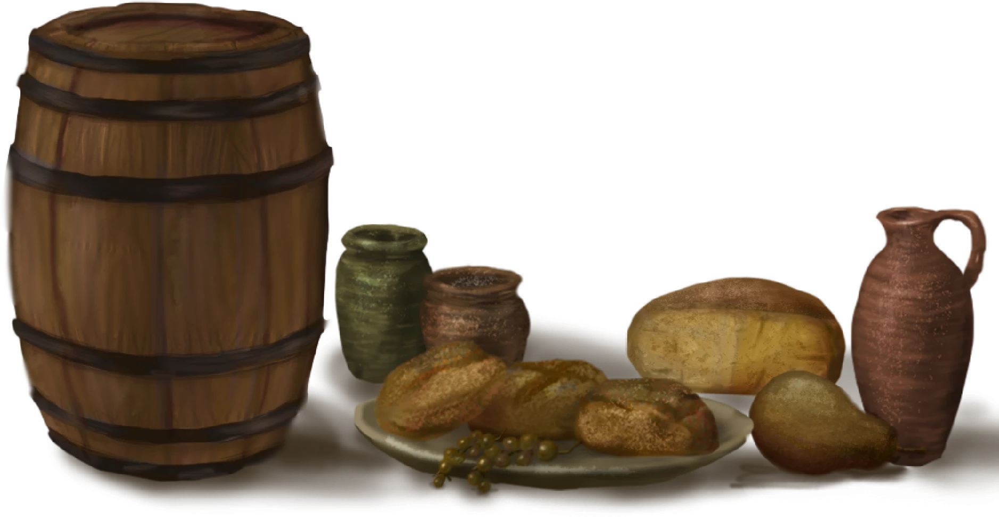
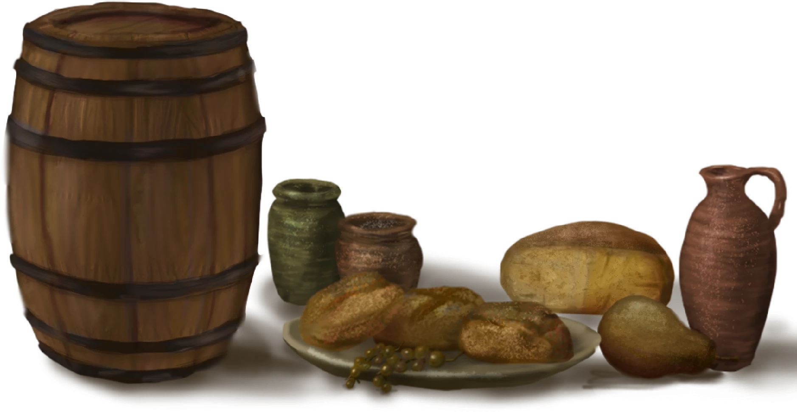
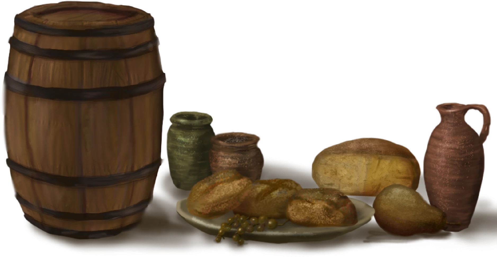
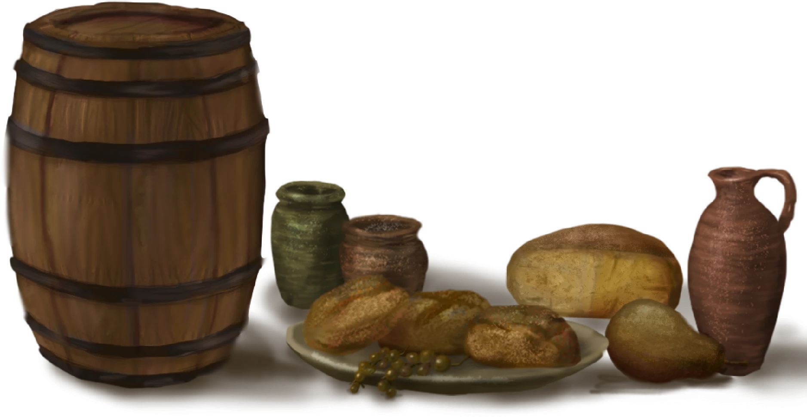
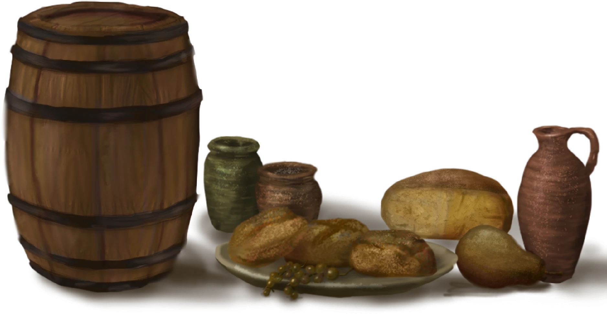